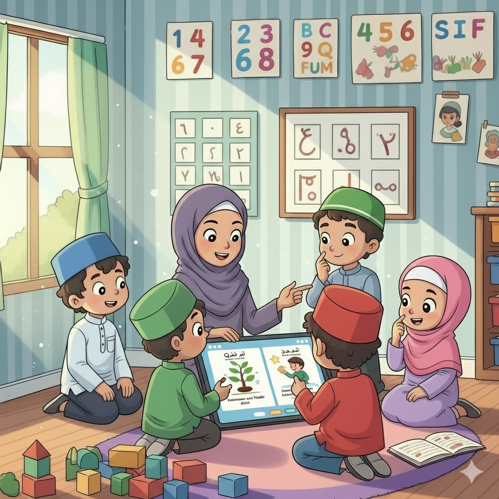

Pengertian Iman kepada Qadha dan Qadar
Iman kepada Qadha dan Qadar adalah keyakinan sepenuh hati bahwa segala sesuatu yang terjadi di alam semesta ini, baik yang baik maupun yang buruk, telah ditetapkan oleh Allah Swt. sejak zaman azali (sebelum semuanya ada).
- Qadha (Ketetapan): Secara bahasa berarti hukum, ketetapan, atau keputusan. Dalam konteks ini, Qadha adalah ketetapan atau rencana Allah yang bersifat umum dan telah tertulis di Lauhul Mahfuz.
- Qadar (Takdir): Secara bahasa berarti ukuran atau perwujudan. Qadar adalah realisasi atau perwujudan dari Qadha dalam kehidupan nyata.

Gambar tersebut adalah hakikat kehidupan manusia. Titik: manusia; Garis di luar kotak: angan-angan manusia; Garis di dalam kotak: Musibah yang senantiasa mengancamnya seperti ajal (qadha dan qadar).